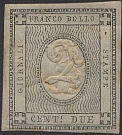
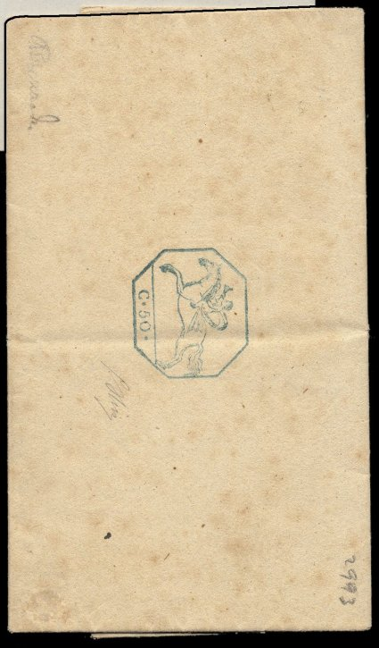
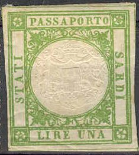

Return To Catalogue - Sardinia 1851 and 1853 issue - Sardinia forgeries of the 1851 issue - Sardinia 1854 issue - Sardinia 1855 issue - Italy
Note: on my website many of the
pictures can not be seen! They are of course present in the
catalogue;
contact me if you want to purchase the catalogue.
1 c grey 2 c grey
A 2 c stamp in yellow was issued in Italy in 1862. Misprints with the embossed '1' on the 2 c frame and the embossed '2' on a 1 c frame exist (very rare in used condition).
Value of the stamps |
|||
vc = very common c = common * = not so common ** = uncommon |
*** = very uncommon R = rare RR = very rare RRR = extremely rare |
||
| Value | Unused | Used | Remarks |
| 1 c | * | * | |
| 2 c | ** | *** | |
Printer's waste:
Printer's waste, double impression

Forgery of the misprint with both the embossed '2' and the
embossed '1' on the 2 c frame
The Billig book of forgeries shows an image of a forgery of the 1 c, with the lettering done more badly than in the genuine stamp (sorry, no image available yet). Forgeries exist by reembossing the center to create rare inverted or error stamps. The Serrane guide states that forged cancels are abundant.



Could be forgeries
(Reduced sizes, probably reprints or forgeries)
15 c blue 25 c blue 50 c blue The same stamps but embossed

(Could be forgeries)
15 c 25 c 50 c
These covers are the first postal stationary to be issued in the world. Forgeries were made of these duty covers (in 1875 by Usigli in Florence using the original plates). These forgeries were quite dangerous and even deceived important collectors (see Le Timbre Poste by Moens, No 267, pages 26-29, 1885). These forgeries were also marketed by the stamp dealer Bonasi. If I'm well informed, these forgeries have a 'star' watermark, which never occurs in the genuine envelopes.
The next cover is forged:
(Forgery)

(Image obtained thanks to Lorenzo)
Other non-issued stamps exist.
The above stamps are cancelled in Aix les Bains, nowadays situated in France. Aix les Bains is part of the Savoie, which was transferred from Italy to France in 1860.

1 L green 3 L blue 10 L red
Similar fiscal stamps with inscription "REGNO D'ITALIA" were issued for ItalyL 1 L green, 10 L violet and 10 L red.
{kind=link}